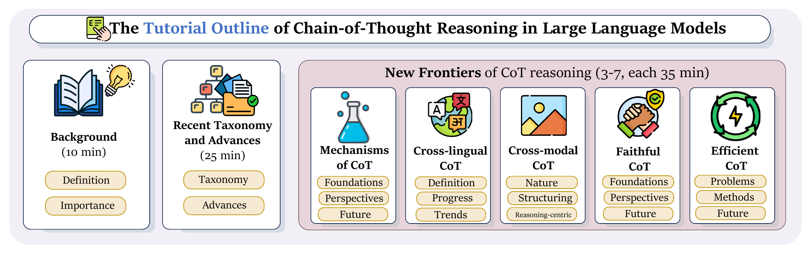

AAAI-27 Tutorial · Montréal, Canada
Chain-of-Thought Reasoning in Large Language Models
Recent Advances and New Frontiers
A systematic, lecture-based tour of how chain-of-thought reasoning works in LLMs, from its evolution and taxonomy to mechanisms, cross-lingual and cross-modal transfer, faithfulness, and efficiency.

Overview
Chain-of-thought (CoT) reasoning has become a central approach to enhancing the reasoning capabilities of large language models (LLMs), evolving from early prompting methods that elicit short intermediate rationales to recent reasoning models that generate long and complex reasoning traces. These advances have opened new research directions while raising fundamental questions about how reasoning works, how it transfers across languages and modalities, whether generated rationales faithfully reflect model behavior, and how reasoning can be made more efficient.
This tutorial provides a systematic overview of the foundations, recent advances, and emerging frontiers of CoT reasoning. We begin with the evolution and taxonomy of CoT, then explore five research directions: mechanisms (explicit, implicit, and latent reasoning), cross-lingual transfer and low-resource languages, cross-modal grounding in images and video, faithful and verifiable rationales, and efficient inference. Each module presents motivation, representative methods, key findings, and open research problems.
The tutorial is intended for researchers and practitioners working on LLMs, natural language processing, reasoning models, multimodal learning, and trustworthy AI, as well as students interested in CoT reasoning. Familiarity with basic machine learning, deep learning, and LLM concepts is recommended, but no prior expertise in CoT reasoning is required.
Speakers
-
Libo Qin
Harbin Institute of Technology, Shenzhen
-
Hao Fei
University of Oxford
-
Zhuosheng Zhang
Shanghai Jiao Tong University
-
Liangming Pan
Peking University
-
Yafu Li
Shanghai AI Laboratory · CUHK
-
Min Zhang
Harbin Institute of Technology, Shenzhen
Schedule

| Session | Speaker | Time |
|---|---|---|
| Background and recent advancesDefinition, taxonomy, and the evolution from short rationales to long-CoT reasoning models. | Libo Qin, Min Zhang | 35 min |
| Mechanisms of CoT reasoningExplicit, implicit, and latent reasoning, plus the interpretability tools used to study them. | Liangming Pan | 35 min |
| Cross-lingual CoT reasoningMultilingual prompting strategies, cross-lingual transfer, and the challenges of low-resource languages. | Libo Qin | 35 min |
| Coffee break | 30 min | |
| Cross-modal CoT reasoningGrounding language reasoning in visual and video evidence, from perception to inference. | Hao Fei | 35 min |
| Faithful CoT reasoningWhat makes a rationale faithful, and how to verify it with causal and process-level tests. | Zhuosheng Zhang | 35 min |
| Efficient CoT reasoningReducing overthinking and inference cost through adaptive computation, compression, and distillation. | Yafu Li | 35 min |
Readings
- Libo Qin Towards Reasoning Era: A Survey of Long Chain-of-Thought for Reasoning Large Language Models Chen et al. · 2026 · Science China Information Sciences · arXiv:2503.09567
- Hao Fei Multimodal Chain-of-Thought Reasoning: A Comprehensive Survey Wang et al. · 2025 · arXiv:2503.12605
- Zhuosheng Zhang Igniting Language Intelligence: The Hitchhiker’s Guide From Chain-of-Thought Reasoning to Language Agents Zhang et al. · 2023 · arXiv:2311.11797
- Liangming Pan Opening the Black Box: A Survey on the Mechanisms of Multi-Step Reasoning in Large Language Models Pan et al. · 2026 · arXiv:2601.14270
- Yafu Li A Survey of Efficient Reasoning for Large Reasoning Models: Language, Multimodality, and Beyond Qu et al. · 2025 · arXiv:2503.21614